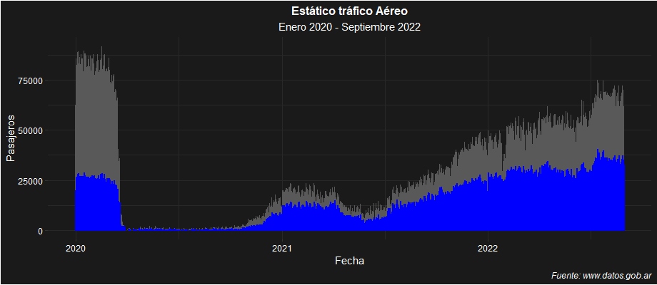

La visualización busca mostrar como el tráfico aéreo se vió reducido drásticamente con el surgimiento de la pandemia dada por el COVID 19 y sus rigurosas restricciones.
El mismo gráfico muestra la recuperación paulatina que se está teniendo, aunque el total de pasajeros que viajan por día sigue por debajo de niveles prepandemia.

El gráfico de barras muestra la predominancia de los aeropuertos de Buenos Aires en lo que respecta a vuelos internacionales.
El gráfico dinámico muestra la evolución de la cantidad de pasajeros transportados por Aerolíneas Argentinas entre 2020 y 2022 y establece una comparación con el total de pasajeros.


El gráfico muestra la evolución de la cantidad de pasajeros transportados por Aerolíneas Argentinas entre 2020 y 2022 y establece una comparación con el total de pasajeros.
La última visualización muestra, para los 5 aeropuertos más transitados del país, la distribución de pasajeros transportados por las principales aerolíneas.